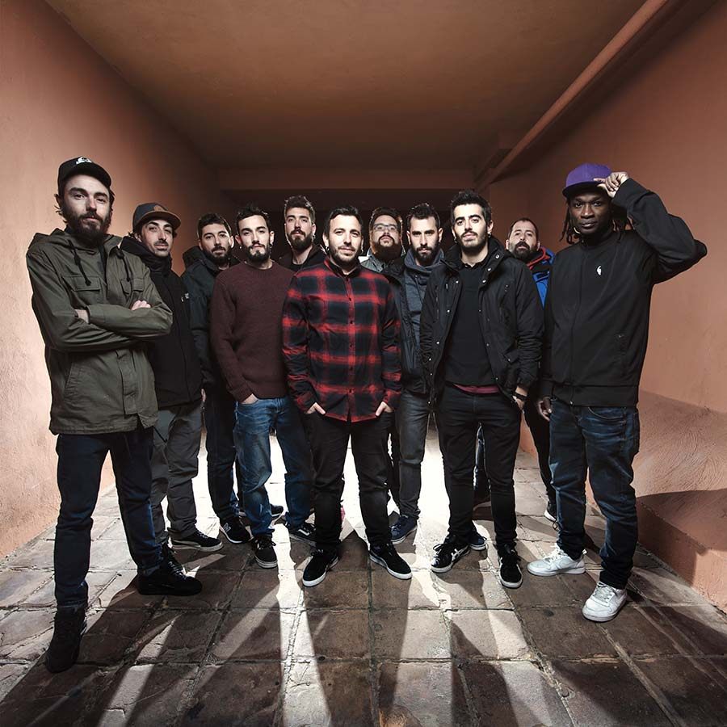

LA RAÍZ
ESPAÑA
Mensaje y actitud en un grupo español de gran alcance popular.
Suman 10 años de carrera [así como los conocemos hasta el día de hoy], cinco discos oficiales y un culto creciente asociado a su repertorio de ska, rock, reggae y letras de observación social. Oriundos de Gandía, en la provincia de Valencia, este conjunto de 11 músicos asoma como el gran crédito de la canción de protesta española, una herencia difícil de administrar en su género, pero que en las canciones de La Raíz, y particularmente de su álbum más reciente –Entre poetas y presos [2016]-, se reactiva con decisión, aplomo y amplio criterio musical. Mensaje y actitud en un grupo de gran alcance popular.